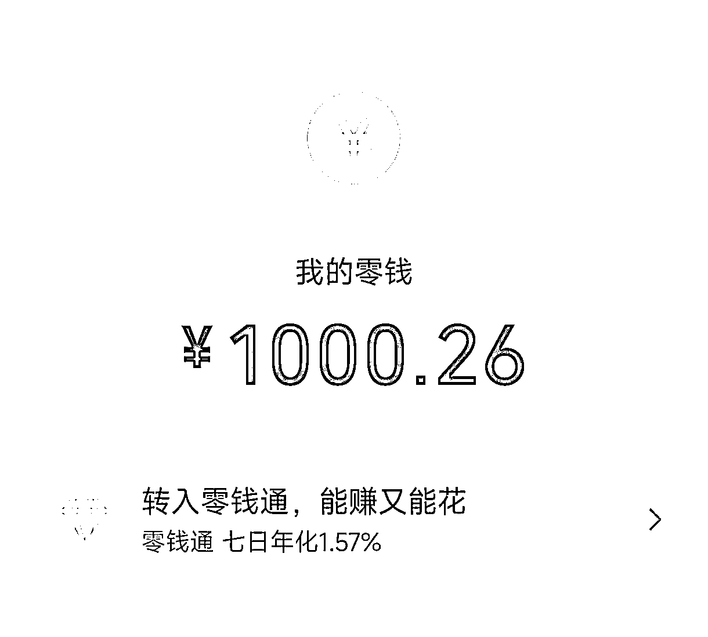

来源：https://zarliul59d.feishu.cn/docx/Vs3vdr7F6olAZmxNW0GcGeXInHg
这是关于小红书虚拟资料（笔记篇）mini航海的复盘
大家好我是简单小医，2023年加入生财有术的小白。本次小红书虚拟资料（笔记篇）mini航海的船员。首先要感谢一下我的教练杨杨，潇墨，还有陪伴我们的鱼丸。因为他们的陪伴，让我从停留在研读航海手册，迈出到发笔记，再到引流变现的闭环操作。虚拟资料做出成绩的大佬还是比较多，我这里仅作为小白复盘反思一下。
先说一下本次项目成绩：
7天发布12篇笔记，（中职护理8篇+班主任赛道4篇），其中有5篇小眼睛过百。靠着一篇阅读量280的笔记成功引流29人，变现15人，共计收入400元。虽然金额较小，但对我来说是一次突破。
下面就对我选择【中职护理教资】这个赛道参加本次航海进行复盘，我将从以下几点开始剖析。
个人背景：小红书半年打鱼选手，养号养了小半年，有一款爆款笔记没有珍惜，因为太小白，没有懂得流量的重要性。
赛道选择： 自己2023年参加了小红书的航海，把闲置的小红书账号又重新捡起来，赛道还是最初的教资（中职护理专业），本着我本身是医疗体系，这方面问问题我能解答，再就是我本身也有相关资格证，有说服力，如果是从出售资料转变到微信上，也就发售1V1的面试指导产品，陪伴营产品，最后建立自己的IP。
账号搭建就老四样，没有什么新的尝试。
找对标： 听教练的话找爆款笔记，那几天爆款真的被copy好多，以至于我产生了排斥心理。但是我的第一个小眼睛突破百，也确实是小爆款带来的，但是我停留在30多的点赞，数据就走的很慢了。按照拆解模板的进行拆解，第一次尝试假装顾客向同行表示诉求。看她引流方式，成交话术，产品内容，朋友圈。（在这里再次感谢mini航海的拆解模板，yyds）打开了我的思路。
资料来源： 自己当时考教资时买的永久更新百度云盘+闲鱼淘来的资料包（极低成本购入）。
关于我的几个突破点：
目前需要改进：
后续计划：
①本周三打算在朋友圈发社群【公开课】，有意向听公开课的未购买资料费的用户转换到购买；购买资料的客户升级产品。
②抓住面试考试【前半个月】的时间，安排教资面试模拟点评服务。
③【考前一周】安排一周陪伴营，顺利面试流程及注意事项，顺便打打鸡血，帮助他们上岸，为明年的教资项目积累可信度素材。
④实现第一个变现四位数（11.11达到1000+了）。

最后再次感谢生财有术团队的所有伙伴，感谢潇墨教练、杨杨教练、鱼丸大人以及mini船上的船员伙伴的陪伴。愿我们的项目越来越好。愿我们早日告别“追求完美”，动起来！